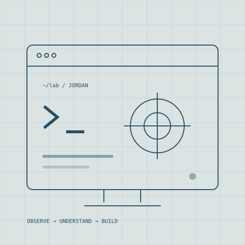

AWS / GCP / IAM / LINUX
Cloud & platform security
Secure cloud architecture, identity and access controls, Linux and Windows systems, Kubernetes, Docker, networking, workload security, and cloud threat detection.
SENIOR CLOUD SECURITY & DEVSECOPS ENGINEER
I work across cloud engineering, application security, DevSecOps, SRE, and regulated SaaS operations—connecting evidence to practical remediation, automation, and durable operating patterns.
United States · 10+ years across security, infrastructure, and reliability · Cloud security, AppSec, DevSecOps, SRE, and regulated SaaS operations

QUICK FIT
My background spans the full path from finding a cloud or application risk to helping engineers implement, validate, and operate the fix.
AWS / GCP / IAM / LINUX
Secure cloud architecture, identity and access controls, Linux and Windows systems, Kubernetes, Docker, networking, workload security, and cloud threat detection.
APPSEC / CI-CD / SUPPLY CHAIN
Threat modeling, architecture and code review, SAST, DAST, SCA, secrets and IaC scanning, SBOMs, container security, and actionable developer feedback.
FEDRAMP / NIST / OBSERVABILITY
Technical investigations, audit evidence, control mapping, vulnerability management, incident response, root cause analysis, monitoring, and reusable runbooks.
SELECTED EXPERIENCE
This is a compact, verifiable snapshot. The downloadable résumé includes the complete role history, responsibilities, and qualifications.
JUNE 2024 — PRESENT
LogicMonitor
Own complex investigations across observability, distributed collectors, cloud integrations, networking, APIs, authentication, and Linux and Windows systems in a regulated SaaS environment.
JANUARY — NOVEMBER 2023
Commure
Embedded security into delivery workflows and partnered with engineers on threat modeling, architecture review, code review, vulnerability analysis, and practical remediation.
JUNE 2021 — JANUARY 2023
Stax Payments
Designed reusable AWS security controls with Terraform and Ansible, hardened container platforms, and supported PCI DSS and ISO 27001 technical risk work.
2016 — 2021
WellSky · 2nd Watch · Samba TV · ClearDATA
Built and operated cloud and Linux systems across healthcare, enterprise AWS, and data platforms with an emphasis on automation, reliability, observability, and secure operations.
FULL CAREER DETAIL
Includes the complete experience timeline, cloud and application security ecosystem, regulated-environment work, automation background, and CompTIA Security+ certification.
PUBLIC WORK
Security research, a free cloud audit preview, secure delivery checks, and a scoped consulting process.
ILL NetworkA local-first Linux security scanner plus Intelligent, Infrastructure, and Independent Linux learning tracks.
Secure domain studioDependency-light static builds, explicit preview and production boundaries, pinned Actions, artifact checks, and resumable handoffs.
HOW I WORK
Reproduce the behavior, inspect logs and system evidence, and separate the root cause from surface symptoms.
Design a fix or control that fits the team’s cloud, delivery, and operational workflow.
Validate the result, document tradeoffs and limits, and leave a clear path for the next engineer.
RECRUITER GUIDE
Senior cloud security, application security, DevSecOps, platform security, and security-minded infrastructure or SRE roles.
Use the public-work links above to review security tooling, static delivery controls, project documentation, and the current limitations recorded in each repository.
The PDF includes the complete experience and skills detail. This public design review intentionally does not collect contact information or schedule meetings.
THE NEXT STEP
For a role, include the team, scope, location or remote policy, compensation range when available, and the problem you need the hire to solve.
Design review only
Live inquiries, appointments, purchases, and subscriptions are not enabled on this GitHub Pages review.
Download résumé ↓